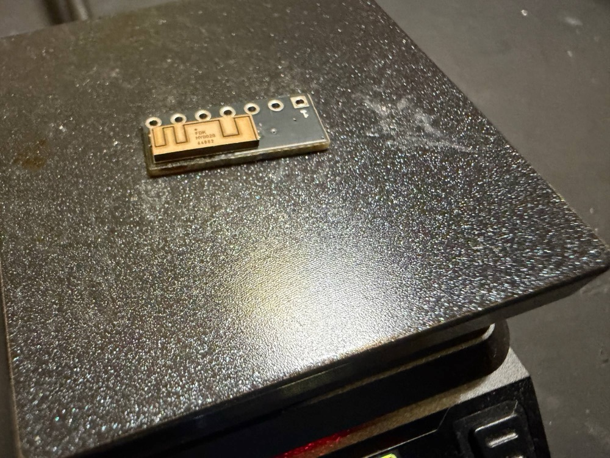
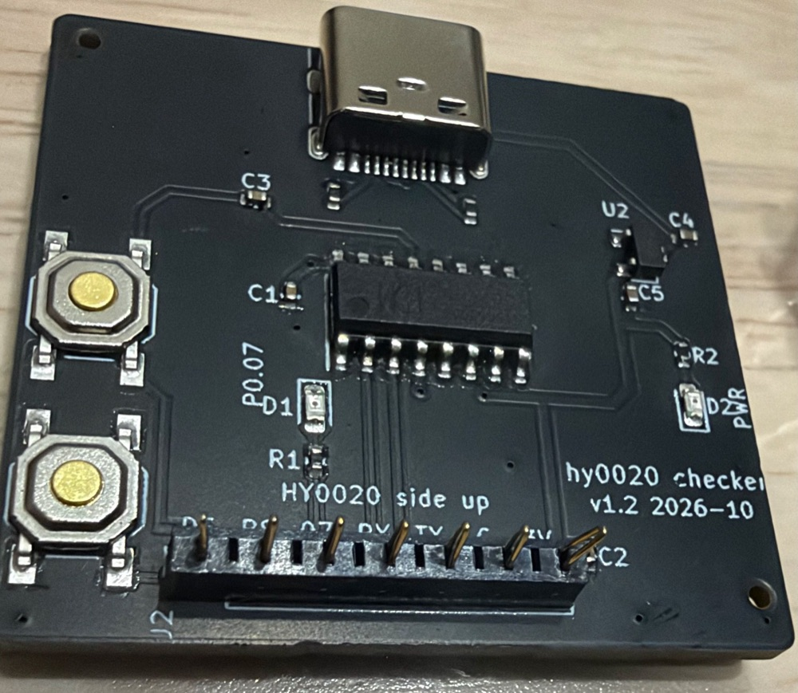
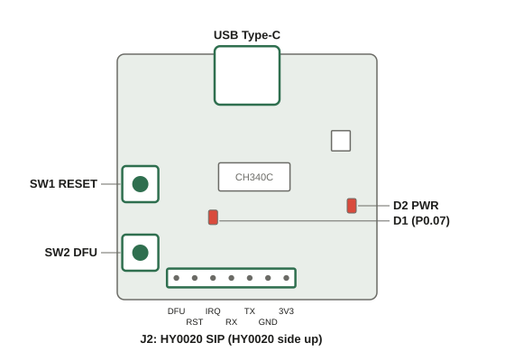

HY0020 UART チェッカー ビルドガイド
HY0020 SIP 基板は、BLE モジュール HY0020 を載せて、UART でつないで使うための小さな基板です。
キーボードに限らず、マイコンと UART で通信する自作の機器を、BLE で無線化できます。
HY0020 UART チェッカーは、HY0020 をリフローした HY0020 SIP 基板が動くかどうかを、機器に取り付ける前に確かめる基板です。
HY0020 SIP を抜き差しでき、USB でパソコンにつないで、ブラウザから確認用のファームウェアを書き込めます。
1. 用意するもの
販売しているもの
HY0020 UART チェッカーと HY0020 SIP 基板は、別々に販売しています。
必要な数を、それぞれ用意してください。
| 部品 | 数 | メモ |
|---|---|---|
| HY0020 UART チェッカー | 1 枚 | コンスルー以外の部品は実装済み。 1 枚あれば、HY0020 SIP 基板を何枚でも確かめられる |
| HY0020 SIP 基板 | 必要な数 | HY0020 をリフローして載せる基板。 無線化したい機器の数だけ用意する。 リフローに慣れていない場合は、予備があると安心 |
必要な工具
はんだごて
はんだ
はんだペースト
リフローに使うもの（ホットプレートやホットエアーなど）
ピンセット
ニッパー
USB Type-C ケーブル（データ通信対応）
パソコン（Chrome / Edge が動くもの）
ご自身で用意して頂くパーツ
| 部品 | 数 | メモ |
|---|---|---|
| HY0020 ブートローダー書込済（秋月電子、BLE モジュール単体） | 1 個 | https://akizukidenshi.com/catalog/g/g131343/ リフローに慣れていない場合は、複数個買っておくと安心です |
| コンスルー（2.54 mm ピッチ、ニッパーなどで 7 ピンに切って使う、高さは問わない） | 1 本 | https://shop.yushakobo.jp/products/31 https://shop.talpkeyboard.com/collections/mac8conthrough |
2. HY0020 のリフロー
HY0020 を HY0020 SIP 基板にリフローします。
温度の条件は、HY0020 のアプリケーションノートの「3 はんだ付け（リフロー）プロファイル」を参考にしてください。
https://www.fdk.co.jp/product/electronic_components/module/pdf/HY0020_AppNote.pdf
作業は、お使いの機器の案内に従ってください。

リフローの例（ホットプレート）。
HY0020 のパッドはモジュールの裏にあり、はんだ付けの状態を目で確かめられません。
このあとの手順で確かめます。
3. コンスルーのはんだ付け
- コンスルーをニッパーなどで 7 ピンに切る。
- コンスルーを HY0020 UART チェッカーの J2 にはんだ付けする。

はんだ付けするのはチェッカーの側だけです。
HY0020 SIP の側ははんだ付けせず、抜き差しして使います。
4. 確認用ファームウェアの書き込み
- チェッカーのコンスルーに、HY0020 を上にして HY0020 SIP を挿す。
- USB でパソコンにつなぐ。
D2（電源）が点灯する。 - Chrome か Edge で HY0020 UART Checker のページを開く。
- 「書き込む」を押し、一覧から CH340 のポート（USB Serial）を選んで「接続」を押す。
- 「完了」と出るまで待つ。
書き込みが始まらないときは、SW2 を押しながら SW1（RESET）を押して離し、もう一度「書き込む」を押してください。
5. 確認する
ページの「モニターを開く」を押すと、確認用ファームウェアの出力が表示されます。
次の 4 つを確かめます。
| 項目 | OK の目安 |
|---|---|
| UART | 「HY0020 checker」とデバイス ID・BLE アドレス・VDD（3300 mV 前後）・温度が表示される。 「再表示」で表示し直せる |
| D1 | 1 秒ごとに 2 回点滅する（出荷時のサンプルは 1 秒に 1 回の点滅） |
| SW2 | 押すと D1 が点灯し、「SW2 pressed」と表示される |
| BLE | スマートフォンなどから「HY0020 XXXX」につなぐと、「BLE connected」と電波の強さ（RSSI）が表示され、D1 が点灯する |
4 つとも OK なら、HY0020 SIP は使えます。
USB を抜いて、HY0020 SIP をチェッカーから抜いてください。
確認用ファームウェアは入れたままで構いません。
Trident40 Wireless では、この確認用ファームウェアが入った状態から、キーボード用のファームウェアを書き込みます。
6. 基板の説明

| 部品 | 役割 |
|---|---|
| USB Type-C | パソコンにつなぐ。 電源と、USB シリアル変換（CH340C）を通した UART の通信 |
| J2（コンスルー） | HY0020 SIP を挿す。 HY0020 を上にして挿す |
| D1 | HY0020 の P0.07 につながった LED |
| D2 | 電源（3.3 V）の LED |
| SW1 | RESET（HY0020 の P0.21） |
| SW2 | DFU（HY0020 の P0.20） |
HY0020 SIP のピン
| ピン | 信号 | HY0020 |
|---|---|---|
| 1 | DFU | P0.20 |
| 2 | RST | P0.21 |
| 3 | IRQ | P0.07 |
| 4 | RX | P0.08 |
| 5 | TX | P0.06 |
| 6 | GND | |
| 7 | 3V3 |
このチェッカーは、UART でつなぐ HY0020 SIP 専用です。
7. 自作の機器で使う
確認が済んだ HY0020 SIP は、マイコンと UART でつないで使えます。
キーボードに限りません。
| 項目 | 内容 |
|---|---|
| つなぎ方 | HY0020 SIP の RX をマイコンの TX に、TX をマイコンの RX につなぐ。 3V3 と GND をつなぐ（電源は 3.3 V） |
| 取り付け | 2.54 mm ピッチの 7 ピン。 細ピンヘッダーなどで、機器の基板にはんだ付けする |
| ファームウェア | HY0020 に書き込むファームウェアは、用途に合わせて用意する。 確認用ファームウェアと Trident40 Wireless のファームウェアは、Arduino（Adafruit nRF52 のボード、Feather nRF52832）で作っている |
| 使用例 | Trident40 Wireless。 STM32 と HY0020 を UART でつないだ無線キーボードで、ファームウェアのソースコードを公開している |
寸法と 3D データ
HY0020 SIP を載せる基板やケースを設計するときのために、寸法図と 3D データを用意しています。
- hy0020_sip_dimensions.pdf（外形、ピン、HY0020、SWD パッドの位置と高さの寸法図）
- hy0020_sip.stl（HY0020 を付けた状態の HY0020 SIP。
単位は mm。
原点は 1 番ピンの中心、+X が 7 番ピン側、+Y が HY0020 側、Z = 0 が基板の裏面）
| 項目 | 寸法 |
|---|---|
| 基板 | 17.78 × 7.2 × 1.6 mm。 HY0020 を付けた高さは 2.6 mm |
| ピン | 1 × 7、2.54 mm ピッチ。 穴 φ0.85、ランド φ1.5 |
| HY0020 | 10 × 3.5 × 1.0 mm。 ピンの列から 1.65 mm 離れた位置に載る |
| SWD パッド | 裏面に φ1.0 が 2 個（DIO、CLK）。 載せる基板の側は、この下に銅箔を置かない |
8. 困ったとき
| 症状 | 対処 |
|---|---|
| D2 が点灯しない | USB ケーブルを確かめる（データ通信対応のものを使う） |
| 一覧に CH340 のポートが出ない | データ通信対応の USB ケーブルか確かめる。 Windows では CH340 のドライバーが必要なことがある |
| 「ブートローダーから応答がありません」と出る | SW2 を押しながら SW1（RESET）を押して離し、もう一度「書き込む」を押す |
| 何度やっても書き込めず、ボタンを押しても変わらない | HY0020 のはんだ不良のことが多い。 リフローし直す |
| ポートを開けない | Arduino IDE やターミナルなど、ほかのアプリがポートを使っていないか確かめる |
9. ソースコード
確認用ファームウェアと書き込みページのソースコードは github.com/darakuneko/keyboard で公開しています（wireless/hy0020_checker/）。